Samurices Samurices 是 7,777 种独特的 Onigiris 的美味集合，由 200 多种特征组合而成，其中一些特征比其他特征更罕见，所有灵感都来自以太坊区块链上的食物和亚洲文化。 所有厨师学徒的
Sandworms by Jaime Derringer 自 2006 年开始我的艺术实践以来，我一直在画冥想、绳索和蛇状的图画。它们代表了我们每天必须处理的错综复杂的思想和情感网络。 对于焦虑和抑郁的人来说，
Santametti Santametti (SANTA) 是艺术家 Pumpametti 的艺术 NFT 收藏。 这是所有 Metti ETH NFT 持有者的假期免费铸币厂。 共有 1000 个圣诞老人可用。 VIP 为 Pumpametti 持有者保留免费薄荷，300 SANTA 可用。 先到先得免费
SAP GENESIS ACCESS Space Ape 计划 (SAP) GENESIS ACCESS 是您进入 SPACE APE 学院和整个 SAP 世界的注册。 欢迎来到太空计划！SAP是一场跨IP NFT太空竞赛。太空猿计划//访问ID卡//使您向太空
Sassy Unicorns Sassy Unicorns Sassy Unicorns 是独特的、手工制作和随机生成的 2D NFT 社交头像，用于您的在线体验。 有些看起来很正常。 有些看起来很奇怪。 有些简直太酷了！ 也许有些人甚至看起来很
SatoshiFaces SatoshiFaces 是 4999 个 NFT 的集合——在以太坊区块链上开发的独特数字收藏品。 Faces 分为两章，从 Genesis 开始，它由生活在 Satoshi 宁静世界中的 3000 个 NFT 组成。 在第 2 章：出埃及记中，情
Satoshis Legions Presale Tokens 重要请阅读 21 年 11 月 22 日美国东部标准时间下午 12:00 拍摄了所有代币持有者的快照。 在该日期之后购买或转让的任何代币都不能用于领取退伍军人证。 中本聪的军
Satoshiverse Collectibles 欢迎来到中本聪！The Satoshiverse是Apollo NFT Studios，Jose Delbo和NFT社区YOU之间的史诗漫画NFT合作。
Savannah Pixels 不隶属于任何其他项目。萨凡纳像素狮子包含 75 个特征。随机生成并存在于以太坊区块链上。Savannah Pixels NFT - 问题常见（FAQ） ▶ 什么是萨凡纳像素
Savannah.Land.Y2123 受 Zoo Tycoon 和 Tamagotchi 的启发，您必须通过在其上找到合适的动植物 NFT 生态平衡，将您的 Land NFT 恢复到良好的健康状态。将分阶段发布4个栖息地，包括萨凡纳、海洋、热带
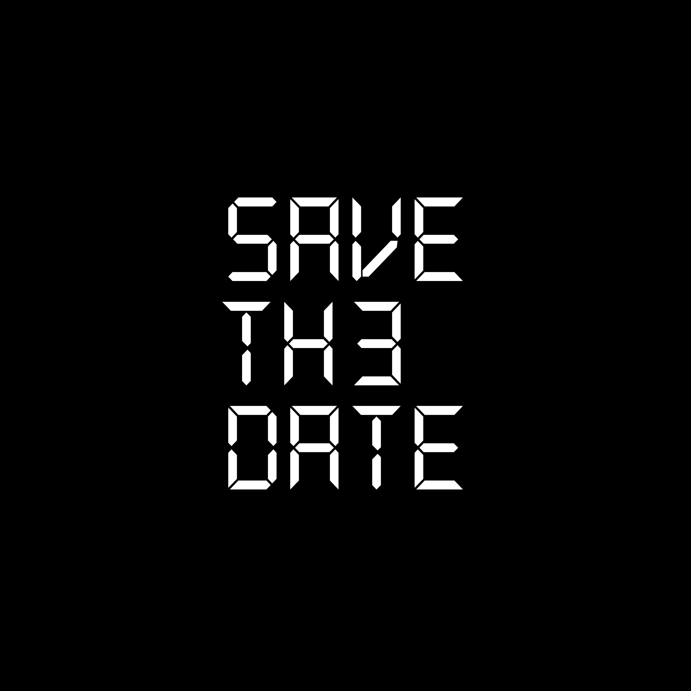 Save The Date Official 每个 DATE 都是您内心或记忆的一部分，将为您打开一个有价值的世界。一个完美的方式来记住一个特殊的生日、周年纪念日或任何其他重要的日期，随着时间的推
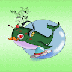 Save The Stupid Whale 一个项目出错的故事！ （请访问我们的推特查找） 这是 1618 条 NFT 的浓烈和古怪鲸鱼的集合，带有许多或多或少稀有的配件。在所有这些鲸鱼中，有 10 条是设计师签
Saw Chapter 1 by Autograph 狮门电影系列 SAW 的限量版收藏品，包括陷阱、示意图、钥匙和车间场景。查看 Autograph NFT 的第 1 章 - 常见问题（FAQ） ▶ 亲笔签名的第 1 章是什么？ Saw Chapter 1 by Autograph 是一
ScareBears Official ScareBears Christmas 是 Polygon 区块链上 4444 个独特随机生成的圣诞熊的集合。 ScareBears 圣诞系列包含三个突出的主题：恐怖、熊和圣诞节。 ScareBears 持有者可以领取圣诞熊。每只 ScareBear 都可以无限期地
Scary Neighbors Club 可怕的邻居是由基于 175 个不同特征的算法自动生成的 3,333 个 NFT 的集合！每个邻居都是独一无二的，他们生活在以太坊多边形区块链中。所有邻居都托管在 IPFS 上。邻
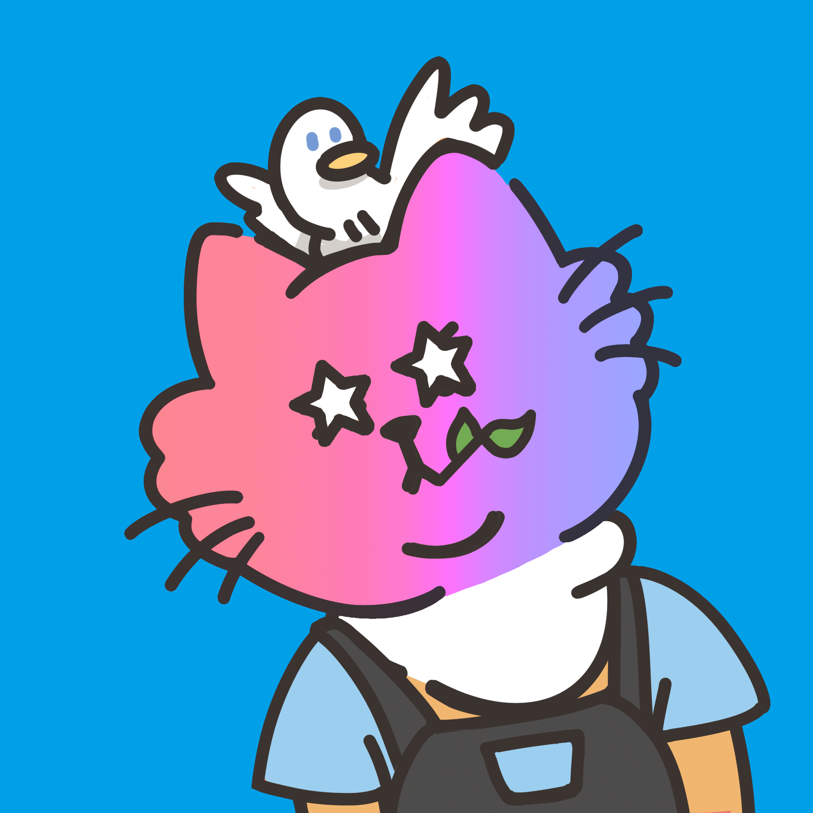 SCHRTDINGERs CAT NFT 薛定谔的猫由世界各地的猫爱好者组成，是第一个基于美国防止虐待动物协会 (ASPCA) 发布的 NFT 集合。薛定谔的猫呼吁世界各地的人们加入保护流浪动物的组织。 ASPCA 是
ScoopDog Squad 欢迎来到 ScoopDog Squad，它包含 10,000 个独特的 NFT，以 ERC-721 代币的形式存储在以太坊区块链上并托管在 IPFS 上。 ScoopDogs 是使用来自 7 个不同组（背景、身体、布料、眼睛
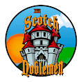 Scotch Noblemen 准备好与 10,001 名苏格兰贵族一起对 Nessie 进行最大规模的探索，见证他们恢复对自己文化和祖先的信仰！苏格兰贵族 NFT - 常见问题 (FAQ) ▶ 什么是苏格兰贵族？ Scotch Noblemen 是一个
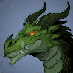 Scoundrels Dragons 恶棍龙是恶棍薄荷创世的前奏。这些凶猛的生物带来了如山般的好处。每个人都会提供与 Scoundrels 相关的独特奖品，包括 sGold、WL 甚至免费薄荷糖。它们还将
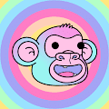 Scribbles Club 0 枚 我们欢迎大家加入 Scribbles CREW！我们将在我们的社交媒体页面上赠送 5 个 SCRIBBLES NFTS。 999 薄荷糖 捐赠给 DIAN FOSSEY 大猩猩基金。蒙克斯联合！ 3333 薄荷糖 25 ETH 将添加
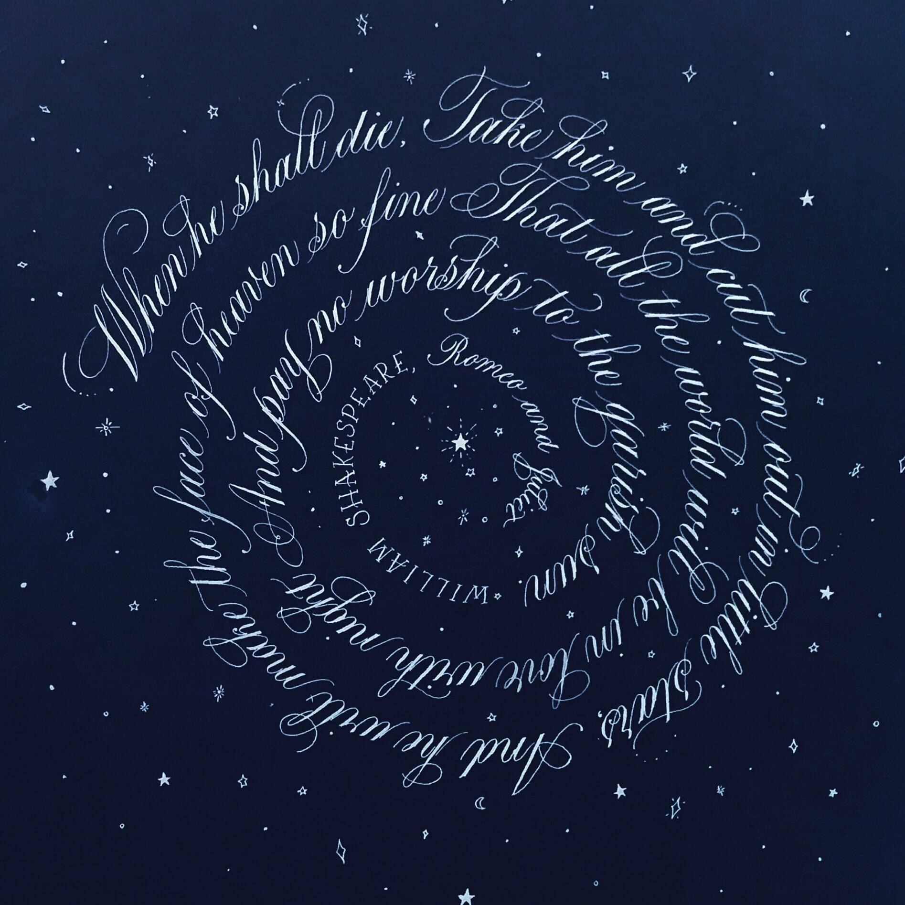 Scripted Quotes 8 年前，我开始了我的书法创作之旅。我不仅通过这种艺术找到了自己的声音，而且我很幸运地为 Goop、Martha Stewart 和 Tiffany & Co 做书法作品。我什至有机
SeaHorseArmy Atlantis Club 您的 SeaHorse 可兼作亚特兰蒂斯俱乐部的会员卡。成为无国界社区的一员，在我们的虚拟土地上享受体验。从虚拟购物到娱乐到沉浸式教育课程，加入符合您生活方式
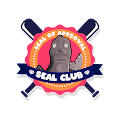 Seal Club NFT 海豹俱乐部_NFT NFT - 常见问题(FAQ) ▶ 什么是海豹俱乐部_NFT？ Seal Club_NFT是一个NFT（Non-fungible token）集合
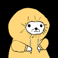 SeasideLuckOCity 生活在海边的生物幸运 o 城市。他们背负着罪过。罪恶越深，他们越能潜入大海。SeasideLuckOCity NFT - 问题常见（FAQ） ▶ 什么是 Sea
Season of editions by Dijaraj Dijaraj NFT 的版本 - 季节问题常见（FAQ） ▶ Dijaraj 的版本是什么季节？ Dijaraj 的 Season of edition 是 NFT（非同质代币）系列。在区块链上的数字收藏品存储集合。 ▶ 有多少 Dijaraj 代币
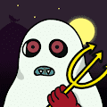 Seasonal Creatures - Halloween 某生物 - 圣诞节 NFT - 问题常见（FAQ） ▶ 什么是生物 - 圣诞节？ 一种生物——圣诞系列是一个NFT（非同质代币）。存储在区块链上的数字收藏品集合。 ▶
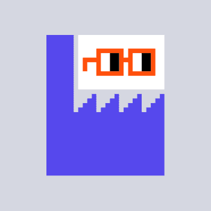 Sebastien's Noundry 越来越多的独特 3D 体素字符由手工创建并在以太坊区块链上注册。来自名词和衍生项目。所有者都将可以访问包含完整 3D 模型的附加资产包。你可以用它来渲染
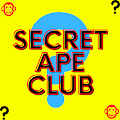 Secret Ape Club 秘密猿俱乐部。期待随机空投。船就是船，但神秘盒子可以是任何东西，甚至可以是船！秘猿俱乐部 NFT - 常见问题（FAQ） ▶ 什么是秘密猿俱乐部？ Secret Ape Club 是
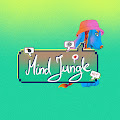 Secret Message by Sandra Jockus (Mind Jungle) 每天都会带来许多不同的情绪和感受，无论好坏。这是一个充满明亮多彩的 NFT 的集合，每个都讲述了一个人和动物的故事，包括各种情感的表达和一些有趣的信
Secret Scroll Society 秘密卷轴协会是 10,000 份随机生成的独特秘密卷轴的集合，这些秘密卷轴可让您进入圆桌会议。 圆桌会议将邀请行业领导者和创新者参加。秘卷社 NFT - 常见问题（F
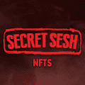 Secret Sesh NFTS Secret Sesh 是代表大麻文化的多样化 NFTS 集合。这些 NFTS 专注于实用程序，并为大麻产品、配件和独家活动提供一系列折扣。Secret Sesh NFTS NFT - 问题常见（FAQ） ▶
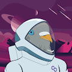 Secret Society of Pigeons 过去 7 天没有出售秘密鸽子协会。 这是一个秘密的鸽子协会，拥有许多不同性格和风格的鸽子 鸽子秘密协会 NFT - 常见问题（FAQ） ▶ 什么是鸽子秘密协会？ Secret
Sekushi Girls NFT SEKUSHI GIRLS NFT - 问题常见（FAQ） ▶ 什么是 SEKUSHI GIRLS？ SEKUSHI GIRLS 是一个 NFT（非同质代币）集合。存储在区块链上的数字收藏品集合。 ▶ SEKUSHI GIRLS 代币有多少？ 2位G
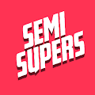 SemiSupers by SeeMikeDraw 这是银河系最大的（ish）半超级英雄联盟！准备好被 MILDY AMAZING 英雄、中度邪恶的恶棍，当然还有一两个僵尸变种之间的 ULTIMATE(ish) 摊牌所打动查看MikeDraw NF
Senior Ape Golf Club 高级猿高尔夫俱乐部 NFT - 常见问题（FAQ） ▶ 什么是高级猿高尔夫俱乐部？ Senior Ape Golf Club 是一个 NFT（Non-fungible token）集合存储。在区
Sensi Legends 森西传奇史诗足球历史充满了令人难忘的时刻，这些时刻是我们集体记忆的一部分。 Sensi Legends EPICS 是手动创建的一种 NFT 的特别版，用于庆祝足球历史上的特殊时刻，例
Senzu Seeds Senzu Seeds，一个游戏化的 NFT 集合，您可以在其中种植虚拟树木并重新造林实际栖息地。在数字和现实世界中重新造林我们的星球。Senzu Seeds NFT - 常见问
Sergs 3D Sergs 是来自 OG CryptoSergs 集合的独特且随机生成的化身，用于加密弯曲、游戏和元界探索。 SERG GANG 将联合起来🤝Sergs NFT - 常见问题（FAQ） ▶ 什么是军士？ Sergs 是一
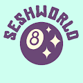 SeshWorld Seshworld NFT - 常见问题（FAQ） ▶ 什么是 Seshworld？ Seshworld 是一个 NFT（非同质代币）集合。 存储在区块链上的数字艺术品集合。 ▶ 存在多少 Seshworld 代币？ 总共


 是艺术家 Pumpametti 的艺术 NFT 收藏。 这是所有 Metti ETH NFT 持有者的假期免费铸币厂。 共有 1000 个圣诞老人可用。")
 GENESIS ACCESS 是您进入 SPACE APE 学院和整个 SAP 世界的注册。")